静岡県菊川市に子宝、安産、縁結びに特化したお寺がある。
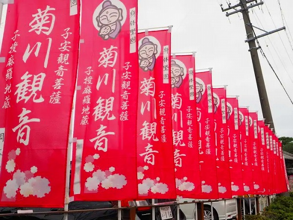
その名は西福寺、通称菊川観音という曹洞宗の寺院だ。
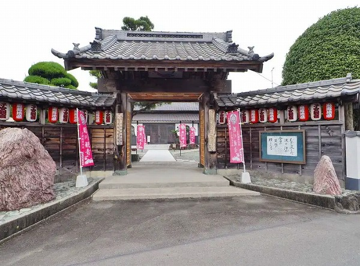
周囲には茶畑が広がり、目の前には東海道線が走る。
そんな場所にある菊川観音は入口からしてピンクの幟が並び紅白の提灯が連なり、とても賑やかな雰囲気だ。
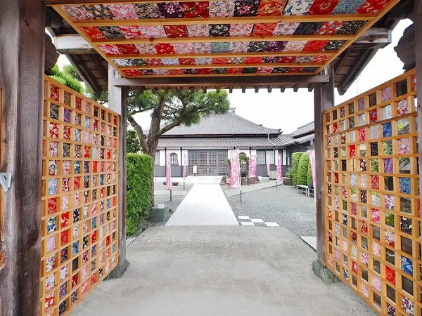
さらに山門の両側と天井には格子に合わせて色鮮やかな布が貼られている。
いわゆる「映える」寺なのだ。
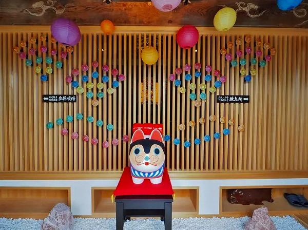
比較的新しい本堂。
中もファンシーな仕上がりになっている。
子宝、安産、縁結び…このお寺のメインターゲットは確実に若い女性だ。
その若い女性向けの工夫があちこちに感じられる。
住職に挨拶して本堂に入る。
写真とかどんどん撮ってSNSとかに上げちゃって下さいねー、との事。
やれありがたや。
撮影禁止の事も多い仏教寺院において積極的に撮影や拡散を進める新しい考えのお寺なのだ。
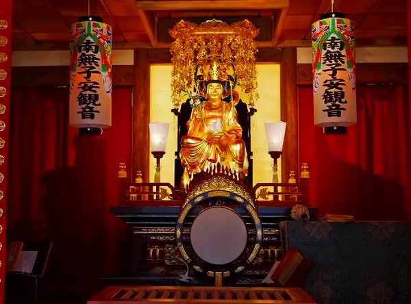
本堂正面には子安観音が金色に輝いている。
お腹に赤子が寝ているのがキュートだ。
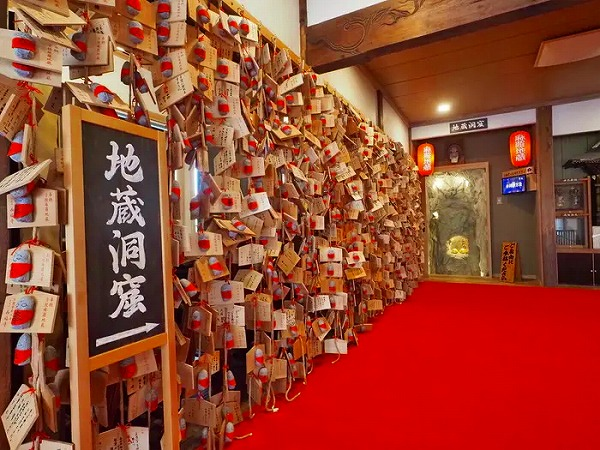
本尊左手には無数の絵馬が壁を埋め尽くしている。
皆、フェルトで出来たお地蔵さんが付いた絵馬だ。
そこに地蔵洞窟という案内が。
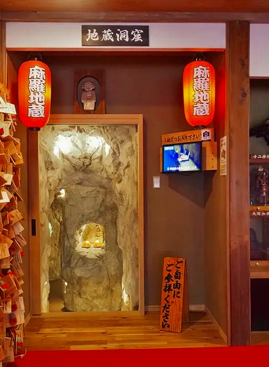
その先には確かに地蔵洞窟の入口があった。
洞窟とはいえ、もちろん人工の洞窟だ。
本堂を新築した際に一緒に造らせたのだろう。
ご自由にどうぞとあったので遠慮なく入らせていただきますよ。
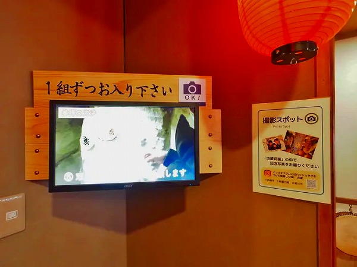
入り口脇にはモニターがあり、そこで 参拝方法を説明している。
ここにも撮影OK、インスタ上等の案内が。
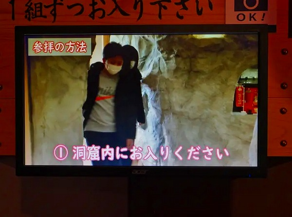
一通り参拝方法が説明されている。
とても判りやすい説明だ。
考えてみれば若い人の中にはお寺に参拝する習慣がない人も多いだろう。
お寺で思いっきり柏手打つ人とかいるもんな。
あ、でも最近は結構年配の人もお寺でこれ見よがしに柏手打つ人もいるので世代だけのハナシじゃないのかな。
そこ気を付けた方がいいですよ。
そういった人達にまで気を配った細やかなサービスだ。
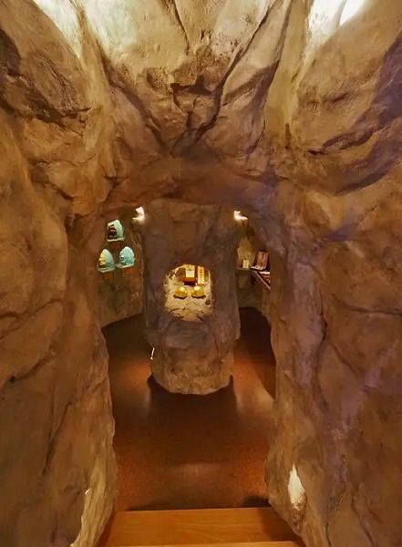
で、いよいよ入洞。
階段を数段下りていく。
人工と判っていても少しドキドキすっぞ。
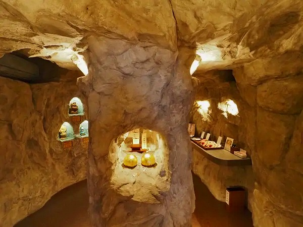
洞窟はそれ程広くはない。
中央に柱がありその周りをぐるりと一周したら終わり、という規模だ。
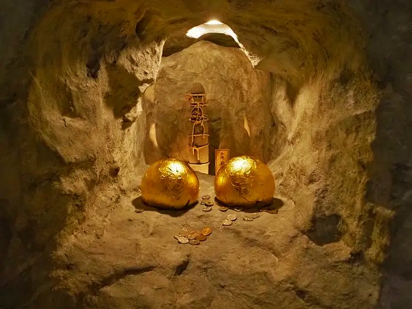
柱の真ん中には穴が空いており、そこに金の玉が二つ並んでいた。
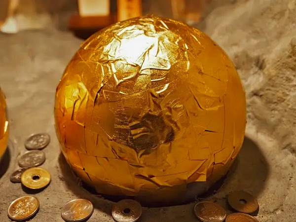
ええと…これは…子宝のもと、という解釈で宜しいのでしょうか？
金箔がびっしりと貼られていた。
壁面には所々穴が空いていて神仏が祀られていた。
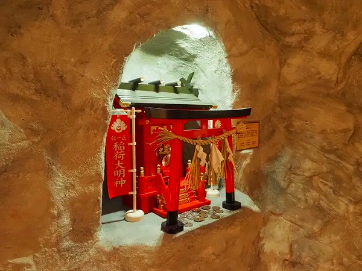
こちらはお稲荷さん。
五穀豊穣が転じて子孫繁栄の神として祀られている。
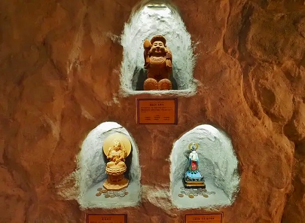
続いて大国、愛染明王。鬼子母神の三体の神仏。
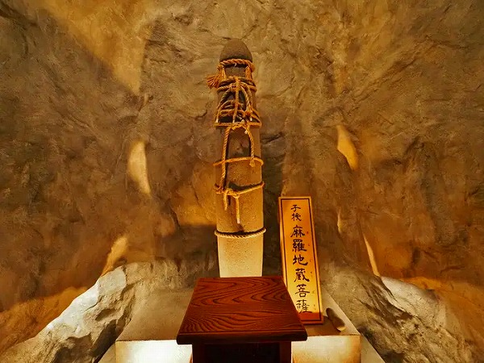
そしてこの洞窟のラスボスとも言える子授麻羅地蔵菩薩。
コレがお地蔵さん？と思われるだろう。
実はコレ石棒といい、縄文時代に祭祀に使われていた呪物なのだ。
もちろん男性器を象徴しており、子宝を祈願したものなのだろう。
縄文時代には祭祀の際に焼いたり割ったりしていたという。
ここの麻羅地蔵もそうした縄文時代の遺物が何時の頃からか近隣の人々が子宝を祈願するようになって、お地蔵さんに変化してしまったようである。
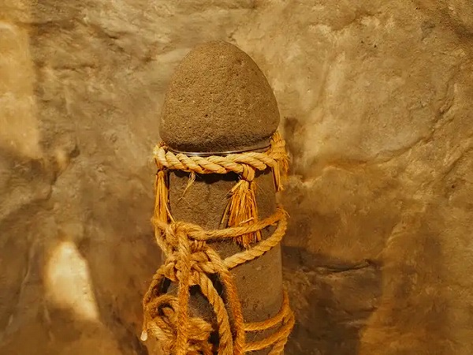
この地蔵の珍しいところは祈願の際に荒縄を巻くという事。
これも由来は不明だが、地蔵に縄を巻くという習俗はたまに散見される。
とくに有名なのは東京の縛られ地蔵で、ここも縁結びに御利益があるとされている。
地蔵を縛るなんて罰当たりな、と思われるかもしれないが実は地蔵に苦痛を与えることで自分の願いを叶えさせるという思考は古くから存在するのだ。
日本中を見渡せば地蔵に火を付けたり、塩や味噌を塗ったり、川に落としたりして地蔵を痛めつけるケースが多々ある。
それだけ地蔵という存在が庶民にとって身近な存在だったのであろう。
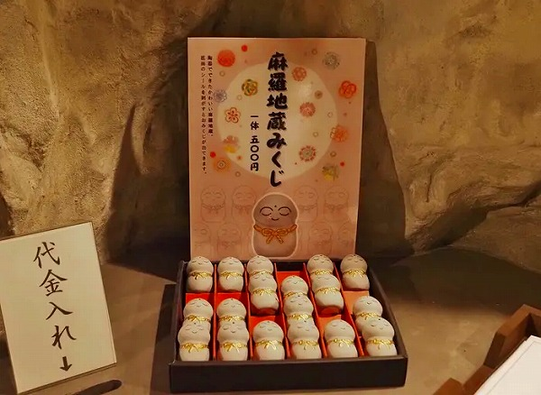
麻羅地蔵みくじ。
要するに男性器型のおみくじだ。
ちゃんと縄が巻かれている。
この後、ひとつの石にたくさんの仏が彫られている一石多尊石仏を拝んで地蔵洞窟参拝は終了となる。
狭いけど思いの他、見ごたえがあった。
洞窟を出て本尊右のサイドを見る。
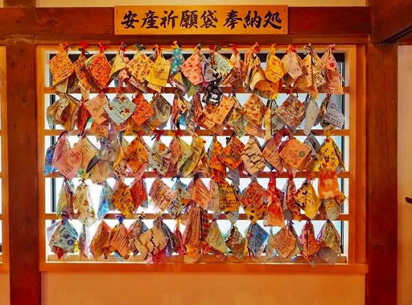
まず目につくのはたくさんの袋が奉納されているコーナー。
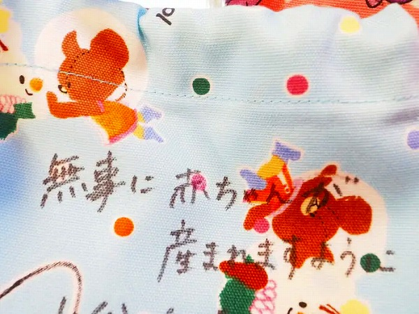
これは安産祈願で、底の抜けた袋が奉納されている。
スポッと産まれるように、ということか。
それぞれの袋には母親の願いが込められている。
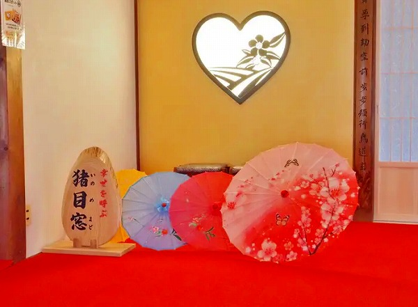
ハート形の窓。
これは猪目窓といい、日本伝統の窓の様式なのだが、近年は「映える」ということで若い人には人気のようだ。
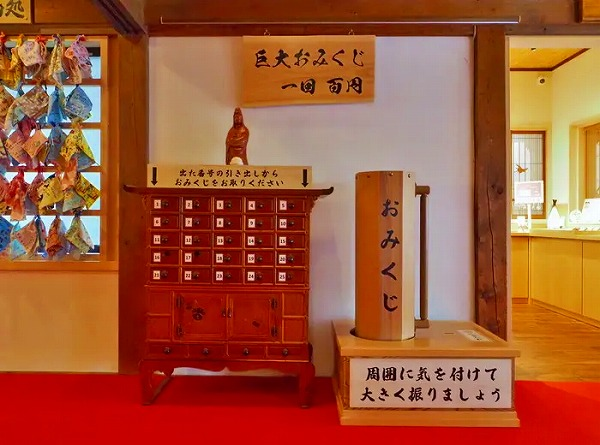
巨大おみくじ。
なぜ巨大なのかは判りません。
でも面白ければそれで良いじゃない。
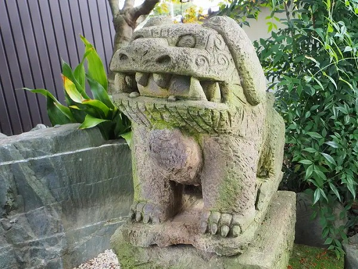
本堂を出て庭にある狛犬を発見。
これまた縁結びの狛犬だとか。
映えスポット満載の寺だったが、個人的にはこの狛犬が一番映えていたような気がする。
それにしても隅から隅まで御利益と「映え」に満ちたお寺だった。
新しい時代に即したきめ細やかなサービスを提供する寺院としてひとつのロールモデルとなるのではなかろうか？
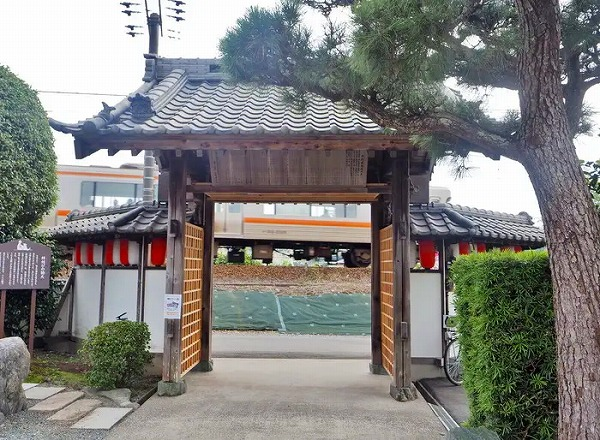
帰りがけに門を潜ろうとしたら目の前を東海道線の車両が横切っていった。
鉄道ファンにとっても映えスポットかも知れないっすね。